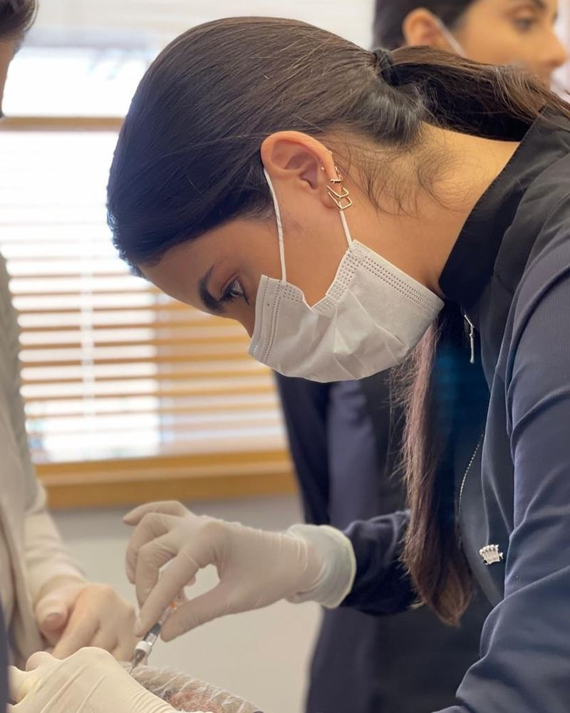
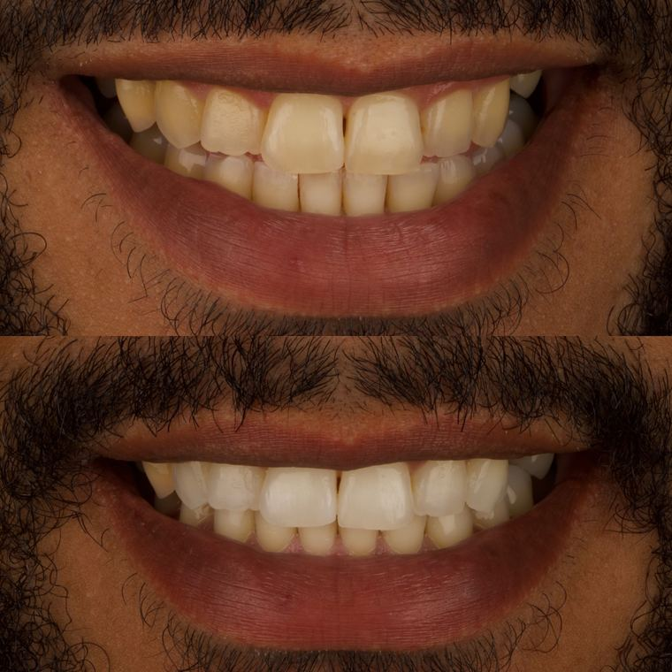
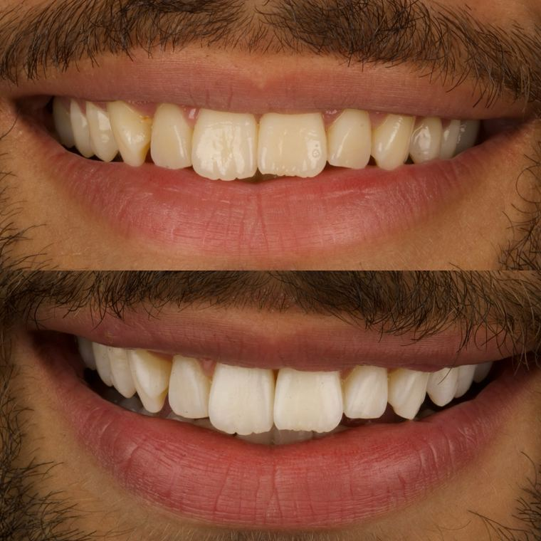
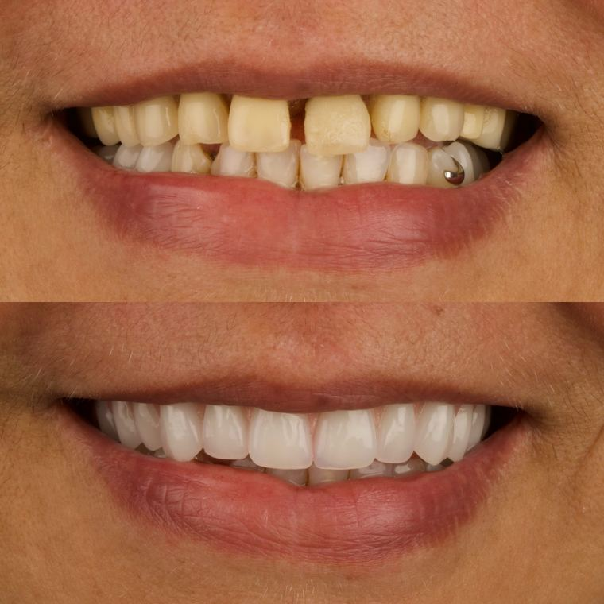

Cirurgiã-dentista CRO-RJ 48370
Cuidado com o seu sorriso,
atenção a você.
Odontologia feita com escuta, tempo e respeito pela sua individualidade. Converse com a Dra. Marina Vale sobre o cuidado que o seu sorriso precisa.
- Registro Cirurgiã-dentista CRO-RJ 48370
- Cuidados Clareamento, próteses, coroas e harmonização orofacial
- Contato WhatsApp @draamarinavale
“Apaixonada por elevar autoestima e autoconfiança.
Dra. Marina Vale
Mudando realidades através do sorriso.”

Sobre
Quem cuida do seu sorriso
Marina Vale é cirurgiã-dentista inscrita no CRO-RJ sob o número 48370. No consultório, acompanha cada etapa de perto: escuta a queixa, explica o que será feito e decide o caminho junto com quem está na cadeira.
“A odontologia nunca vai ser só sobre dentes. É sobre devolver sorrisos, autoestima, segurança, função e um pouco mais de vontade de viver.”
Dra. Marina Vale
A preencher Formação e trajetória
Espaço reservado para graduação, especializações, cursos e tempo de atuação — publicar apenas o que for confirmado pela Dra. Marina.
Tratamentos
Cuidados realizados pela Dra. Marina
Cada caso é único e começa por uma avaliação. Abaixo, os tratamentos já divulgados pela própria dentista.
A confirmar lista completa de tratamentos e redação das descrições.
-
Clareamento dental
Clareamento em consultório, que pode ser associado ao clareamento caseiro supervisionado, com acompanhamento da evolução da cor.
Conversar sobre clareamento dentalSaiba mais
A indicação, o número de sessões e a combinação entre consultório e uso domiciliar são definidos na avaliação, de acordo com a condição dos dentes de cada pessoa. Em reabilitações, o clareamento pode ser feito antes da confecção de coroas definitivas, para que a cor final acompanhe o novo tom dos dentes.
-
Próteses sobre implantes
Reabilitação com prótese fixa sobre implantes, incluindo casos de carga imediata, em parceria com a equipe responsável pela etapa cirúrgica.
Conversar sobre próteses sobre implantesSaiba mais
A troca de uma prótese removível por dentes fixos muda o dia a dia: a mastigação, a fala e a segurança para sorrir. O planejamento é feito caso a caso e define número de implantes, etapas e prazos. Resultados variam conforme cada situação clínica.
-
Coroas e reabilitação oral
Coroas sobre dente e sobre implante, devolvendo forma e função ao sorriso, com tratamento conduzido por etapas.
Conversar sobre coroas e reabilitação oralSaiba mais
Em reabilitações mais amplas, o trabalho costuma passar por provisórios antes das peças definitivas. Esse intervalo permite ajustar forma, cor e conforto com calma, conferindo o resultado junto com o paciente antes de finalizar.
-
Harmonização orofacial
Procedimentos como o preenchimento labial, conduzidos com atenção à proporção, à naturalidade e às características de cada rosto.
Conversar sobre harmonização orofacialSaiba mais
O objetivo é respeitar o desenho natural dos lábios e do rosto: volume adequado, arco do cupido preservado e comissuras em proporção. A conversa anterior ao procedimento define expectativas e limites de cada caso.
Resultados
Casos conduzidos pela Dra. Marina
Imagens reais, publicadas pela própria dentista com autorização dos pacientes. Cada caso é único: o resultado depende da situação clínica de cada pessoa.
A confirmar autorização por escrito para uso no site e as regras de publicidade do CRO-RJ.
-

Clareamento dental
Clareamento realizado antes da confecção das coroas definitivas, acompanhando a resposta de cor do dente.
-

Naturalidade
Finalização que preserva a aparência natural dos dentes, sem exageros de forma ou de cor.
-

Transformação do sorriso
Caso concluído e entregue no consultório, devolvendo forma e função ao sorriso.
Quer saber se o seu caso tem indicação parecida? Conversar pelo WhatsApp
Consultório
Onde a Dra. Marina atende
- Endereço
-
Rua Coronel Manoel Bernardes, 45 — Sala 201
Cidade e UF a confirmar - Horários
- A preencher dias e horários de atendimento
- Informações práticas
- A preencher convênios, formas de pagamento, estacionamento e acessibilidade
Fotos do consultório
1 de 3
Perguntas frequentes
Dúvidas comuns antes da primeira conversa
Como faço para agendar uma consulta?
O contato é feito pelo WhatsApp. Envie uma mensagem contando o que você procura e o retorno chega pelo mesmo canal, com os horários disponíveis.
Enviar mensagemOnde fica o consultório?
Rua Coronel Manoel Bernardes, 45 — Sala 201. Cidade e UF a confirmar
Ver endereço e como chegarQuais tratamentos a Dra. Marina realiza?
Clareamento dental, próteses sobre implantes, coroas e reabilitação oral e harmonização orofacial. Outros procedimentos podem ser avaliados na conversa inicial.
Ver os tratamentosQuais são os horários de atendimento?
A preencher dias da semana e faixas de horário confirmados pela Dra. Marina.
O consultório atende convênios?
A preencher convênios aceitos e formas de pagamento.
Quanto custa um tratamento?
O valor depende do que cada caso precisa e só é definido depois da avaliação, quando dá para examinar, conversar sobre as possibilidades e montar o plano de tratamento. Pelo WhatsApp você já pode contar o que procura e combinar essa primeira avaliação.
Posso falar pelo Instagram?
Sim, o perfil @draamarinavale está ativo. Para agendar, o WhatsApp é o canal indicado.
Vamos conversar sobre o seu sorriso
Conte o que você está sentindo ou o que gostaria de mudar. A Dra. Marina responde pelo WhatsApp e também pelo Instagram.
- WhatsApp (24) 98104-0504 A confirmar
- Endereço Rua Coronel Manoel Bernardes, 45 — Sala 201 Cidade a confirmar
- Horários A preencher